Opções¶
1. O que são opções?¶
Uma opção é um contrato que dá ao titular um direito sobre determinado ativo.
- Call: direito de comprar
- Put: direito de vender
O comprador da opção paga um prêmio para adquirir esse direito. O vendedor recebe o prêmio e assume a obrigação correspondente.
Mantendo os demais fatores constantes, a parcela de valor relacionada ao tempo tende a diminuir conforme o vencimento se aproxima. Isso não significa, porém, que o preço da opção sempre cairá com o passar dos dias, pois ele também depende do comportamento do ativo e da volatilidade.
2. Elementos de uma opção¶
Os principais elementos de um contrato de opção são:
- Ativo-objeto: ativo ao qual a opção está ligada
- Strike ou preço de exercício: preço pelo qual o ativo poderá ser comprado ou vendido
- Prêmio: preço pago pela opção
- Vencimento: data final do contrato
- Quantidade: número de ativos abrangidos
- Estilo de exercício: define quando a opção pode ser exercida
Além desses elementos, o preço da opção é influenciado pelo preço do ativo, prazo, volatilidade, juros e dividendos esperados.
3. Titular e lançador¶
O titular é quem compra a opção. Ele paga o prêmio e recebe um direito.
O lançador é quem vende a opção. Ele recebe o prêmio e assume uma obrigação caso o titular exerça seu direito.
Quando alguém vende uma opção para abrir uma posição, não precisa ter comprado aquela opção anteriormente. Nesse caso, está criando uma posição lançadora.
Como o lançador pode ser obrigado a comprar ou vender o ativo, sua posição pode exigir margem de garantia. Já o titular de uma opção isolada tem sua perda máxima limitada ao prêmio pago.
A lógica principal é:
| Posição | O que possui |
|---|---|
| Compra de call | Direito de comprar |
| Venda de call | Obrigação de vender |
| Compra de put | Direito de vender |
| Venda de put | Obrigação de comprar |
4. Margem de garantia e margin call¶
Algumas posições em derivativos podem gerar perdas superiores ao valor inicialmente recebido ou depositado. Por isso, a corretora ou a câmara de compensação pode exigir uma margem de garantia.
A margem funciona como um colateral para assegurar que o investidor conseguirá cumprir suas obrigações. Ela pode ser composta por dinheiro ou por ativos aceitos como garantia, de acordo com as regras aplicáveis.
A exigência de margem aparece principalmente em:
- contratos futuros
- opções vendidas
- operações alavancadas
- estratégias que podem gerar obrigações futuras
O valor exigido não é necessariamente fixo. Ele pode mudar conforme:
- o preço do ativo
- a volatilidade
- o prazo até o vencimento
- o tamanho e o risco da posição
- as demais posições da carteira
O que é uma margin call?¶
A margin call, ou chamada de margem, acontece quando as garantias depositadas deixam de ser suficientes para cobrir o risco da posição.
Nesse caso, o investidor precisa depositar recursos ou ativos adicionais. Caso não recomponha a margem dentro do prazo determinado, a corretora poderá reduzir ou encerrar posições para controlar o risco.
Exemplo
Um investidor vende uma call descoberta e deposita R$ 10 mil em garantias.
Se o preço da ação subir muito, o risco da posição aumenta. Com isso, a margem exigida pode subir para R$ 15 mil.
O investidor terá de depositar mais R$ 5 mil. Essa solicitação adicional é a chamada de margem.
Importante
Margem de garantia não representa a perda máxima da operação. Ela é apenas o valor exigido como proteção diante do risco estimado. A perda efetiva pode ser maior.
5. Exercício, encerramento e vencimento¶
Uma posição em opções não precisa necessariamente chegar ao exercício.
Antes do vencimento, o investidor pode encerrar sua posição realizando a operação contrária:
- quem comprou uma opção pode vendê-la
- quem vendeu uma opção pode recomprá-la
Ao fazer isso, o investidor realiza o ganho ou a perda acumulada e deixa de possuir aquela posição.
Caso a opção seja mantida até o vencimento, ela poderá ser exercida se estiver dentro do dinheiro. Dependendo do contrato, o exercício pode resultar na compra ou venda do ativo-objeto ou em uma liquidação financeira.
As opções também podem ser classificadas de acordo com o momento em que admitem exercício:
- Opção americana: pode ser exercida antes do vencimento, conforme as regras do contrato
- Opção europeia: somente pode ser exercida na data de vencimento
Para o lançador de uma opção americana, isso significa que existe a possibilidade de exercício antecipado.
6. Moneyness: ITM, ATM e OTM¶
O moneyness mostra a relação entre o strike da opção e o preço atual do ativo.
Call¶
- ITM (in the money): strike abaixo do preço do ativo
- ATM (at the money): strike próximo do preço do ativo
- OTM (out of the money): strike acima do preço do ativo
Put¶
- ITM: strike acima do preço do ativo
- ATM: strike próximo do preço do ativo
- OTM: strike abaixo do preço do ativo
Uma opção ITM possui valor econômico imediato caso seja exercida. Uma opção OTM não possui valor intrínseco naquele momento.
7. Valor intrínseco e valor extrínseco¶
O prêmio de uma opção pode ser dividido em duas partes.
Valor intrínseco é o ganho imediato que existiria caso a opção fosse exercida naquele momento. Uma opção somente possui valor intrínseco quando está ITM.
Valor extrínseco é a parcela do prêmio associada à possibilidade de a opção se tornar mais valiosa até o vencimento. Ela depende principalmente de:
- tempo restante
- volatilidade
- juros
- dividendos esperados
- relação entre o strike e o preço do ativo
As opções ATM normalmente concentram maior valor extrínseco, pois existe maior incerteza sobre terminarem dentro ou fora do dinheiro.
8. Payoff e resultado líquido¶
O payoff mostra o valor da opção ou da estratégia no vencimento. Já o resultado líquido considera também o prêmio pago ou recebido na montagem da posição.
Exemplo
Uma call com strike de R$ 100, prêmio de R$ 4, e preço do ativo no vencimento de R$ 110.
A call terá valor de R$ 10 no vencimento, pois permite comprar por R$ 100 algo que vale R$ 110.
Porém, como o investidor pagou R$ 4 pelo contrato, seu lucro líquido será de R$ 6.
Por isso, é importante verificar se um gráfico representa apenas o payoff no vencimento ou o resultado completo da operação, já considerando os prêmios.
9. Break-even¶
O break-even, ou ponto de equilíbrio, é o preço do ativo a partir do qual a operação começa a gerar lucro ou prejuízo no vencimento.
- Em uma call comprada: Break-even = strike + prêmio pago
- Em uma put comprada: Break-even = strike − prêmio pago
O strike mostra quando a opção passa a ter valor intrínseco. O break-even considera também o custo pago para montar a posição.
10. Precificação de opções¶
O preço de uma opção depende de diversas variáveis. O modelo Black-Scholes é uma das principais referências utilizadas para calcular seu valor teórico.
O modelo não determina necessariamente o preço pelo qual a opção será negociada. Ele fornece uma estimativa baseada em fatores como:
- preço atual do ativo
- strike
- prazo até o vencimento
- volatilidade
- taxa de juros
- dividendos esperados
O preço efetivamente negociado depende da oferta e da demanda no mercado.
Volatilidade histórica e volatilidade implícita¶
A volatilidade histórica mede quanto o preço do ativo oscilou no passado.
Já a volatilidade implícita é obtida a partir dos preços das opções negociadas no mercado. Ela representa a volatilidade que está incorporada no prêmio da opção.
Quanto maior a volatilidade implícita, maior tende a ser o preço da opção, pois aumenta a possibilidade de o ativo apresentar movimentos relevantes até o vencimento.
Strikes e vencimentos diferentes podem apresentar volatilidades implícitas diferentes. Essa relação é frequentemente representada por uma superfície de volatilidade.
11. Gregas¶
As gregas medem como o preço da opção tende a reagir a mudanças nos fatores que determinam seu valor.
Delta — mostra quanto o preço da opção tende a variar quando o ativo se movimenta em R$ 1,00. Uma call normalmente possui delta positivo, pois tende a valorizar quando o ativo sobe. Uma put normalmente possui delta negativo.
Theta — mede o efeito da passagem do tempo sobre o valor da opção. Para posições compradas, o theta normalmente é negativo, pois o tempo restante para a opção se valorizar diminui. Para posições vendidas, o theta normalmente é positivo. A perda de valor temporal tende a se acelerar próximo ao vencimento, principalmente em opções próximas do dinheiro.
Gamma — mede quanto o delta da opção tende a variar quando o preço do ativo muda. Uma opção com gamma elevado pode apresentar mudanças mais rápidas em sua exposição ao ativo.
Vega — mede a sensibilidade da opção a mudanças na volatilidade implícita. Quanto maior o vega, maior tende a ser o impacto de uma alteração na volatilidade sobre o preço da opção.
Rho — mede a sensibilidade da opção a mudanças na taxa de juros. Em opções de prazos curtos, seu efeito costuma ser menor. Em contratos mais longos, a influência dos juros pode se tornar mais relevante.
12. As quatro posições básicas¶
Toda estratégia com opções é formada a partir de quatro posições fundamentais: compra de call, venda de call, compra de put e venda de put.
Compra de Call — Long Call¶
Ao comprar uma call, o investidor adquire o direito de comprar o ativo pelo strike. É uma posição utilizada quando se espera uma alta do ativo.
- Ganho potencial: teoricamente ilimitado
- Perda máxima: prêmio pago
- Break-even: strike mais prêmio pago
No vencimento, se o ativo estiver acima do strike, a call terá valor intrínseco. Se estiver abaixo, poderá vencer sem valor e a perda ficará limitada ao prêmio.
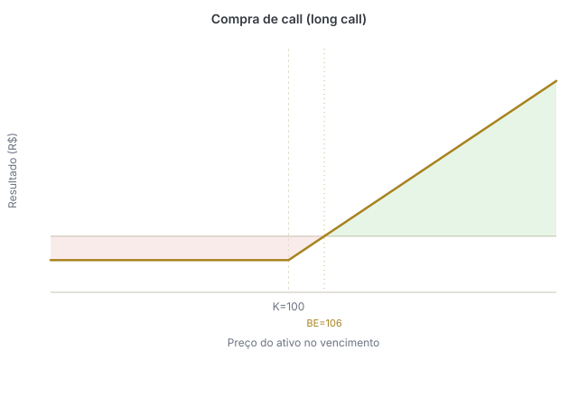
Venda de Call — Short Call¶
Ao vender uma call, o investidor assume a obrigação de vender o ativo pelo strike caso seja exercido. Uma call descoberta pode ser utilizada quando se espera estabilidade ou queda do ativo, mas envolve risco elevado.
- Ganho máximo: prêmio recebido
- Perda potencial: teoricamente ilimitada
- Break-even: strike mais prêmio recebido
Se o preço do ativo subir muito, o lançador continuará obrigado a vendê-lo pelo strike.
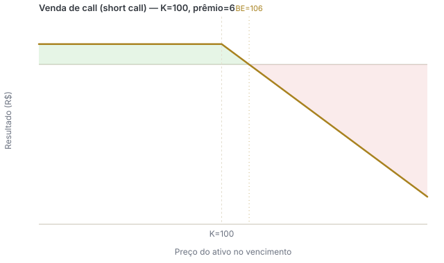
Compra de Put — Long Put¶
Ao comprar uma put, o investidor adquire o direito de vender o ativo pelo strike. A posição pode ser utilizada quando se espera queda do ativo ou quando se busca proteção para uma posição comprada.
- Ganho potencial: aumenta conforme o ativo cai, mas é limitado pelo fato de o preço do ativo não poder cair abaixo de zero
- Perda máxima: prêmio pago
- Break-even: strike menos prêmio pago
Quanto menor o preço do ativo no vencimento, maior tende a ser o valor da put.
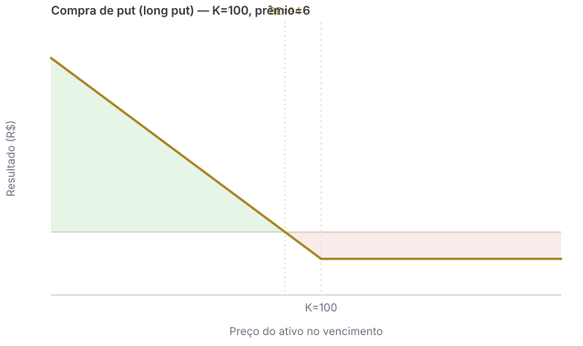
Venda de Put — Short Put¶
Ao vender uma put, o investidor assume a obrigação de comprar o ativo pelo strike caso seja exercido. A posição pode ser utilizada quando se acredita que o ativo permanecerá estável ou irá subir.
- Ganho máximo: prêmio recebido
- Perda potencial: relevante caso o ativo caia, mas limitada ao cenário em que seu preço chega a zero
- Break-even: strike menos prêmio recebido
Na prática, o lançador está assumindo o compromisso de comprar o ativo por um preço definido previamente.
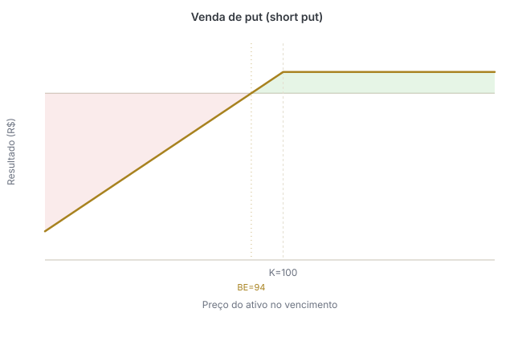
Dica
Call está relacionada à compra e put à venda. Quem compra uma opção adquire um direito. Quem vende ou lança uma opção assume uma obrigação.
13. Venda coberta de call¶
Na venda coberta, o investidor possui o ativo em carteira e vende uma call sobre ele.
Ao receber o prêmio, ele aumenta a renda da posição. Em contrapartida, assume o compromisso de vender o ativo pelo strike caso a call seja exercida.
A estratégia costuma fazer sentido quando o investidor acredita que o ativo ficará estável ou terá uma alta limitada.
- O investidor já possui o ativo
- Recebe o prêmio da call
- Mantém o risco de queda da ação
- Limita seu ganho acima do strike
Como as ações em carteira cobrem a obrigação de entrega, o risco é diferente do de uma call vendida a descoberto.
Em algumas abordagens práticas, busca-se vender opções com volatilidade implícita mais elevada e prazo entre aproximadamente 20 e 35 dias até o vencimento. Esses números servem apenas como referência e podem variar conforme o ativo, o mercado e o objetivo da operação.
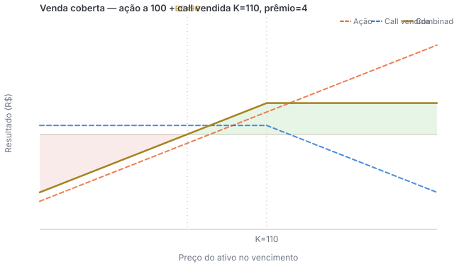
14. Venda descoberta de call¶
Na venda descoberta de call, o lançador não possui o ativo necessário para cumprir a obrigação.
Se o preço subir e a call for exercida, ele poderá precisar comprar o ativo por um preço elevado para entregá-lo pelo strike.
Por isso:
- o ganho máximo é limitado ao prêmio recebido
- a perda potencial é teoricamente ilimitada
- normalmente há exigência de margem de garantia
- a posição pode gerar chamadas adicionais de margem caso o risco aumente
Essa operação não deve ser confundida com a venda a descoberto de uma ação, em que o investidor toma o próprio ativo emprestado, vende e pretende recomprá-lo por um preço menor.
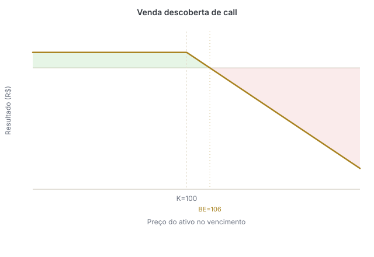
15. Outras estratégias comuns¶
As quatro posições básicas podem ser combinadas para criar diferentes perfis de risco e retorno.
Protective put¶
Montagem: ação comprada + put comprada.
O investidor mantém o potencial de valorização da ação, mas compra uma put para limitar sua perda caso o preço caia. A estratégia funciona de maneira semelhante à contratação de um seguro: o prêmio pago pela put representa o custo da proteção.
- Expectativa: alta do ativo, mas com proteção contra quedas
- Ganho potencial: acompanha a valorização da ação, descontado o prêmio
- Perda máxima: limitada pelo strike da put, considerando o preço de compra da ação e o prêmio pago
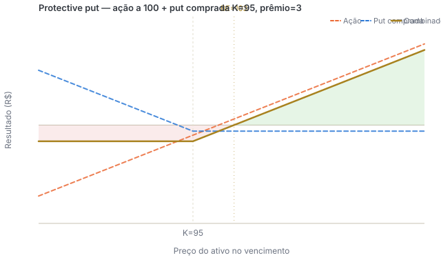
Collar¶
Montagem: ação comprada + put comprada + call vendida.
A put estabelece um nível de proteção para a queda, enquanto o prêmio recebido pela call ajuda a reduzir ou financiar o custo da put. Em contrapartida, o ganho da posição fica limitado acima do strike da call.
- Expectativa: manutenção ou alta moderada do ativo
- Ganho máximo: limitado pelo strike da call
- Perda máxima: limitada pelo strike da put
- Custo: pode ser reduzido pelo prêmio recebido na venda da call
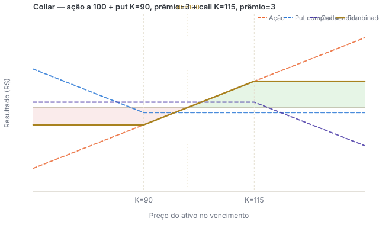
Trava de alta com calls¶
Montagem: compra de uma call + venda de outra call com strike superior (mesmo ativo-objeto, quantidade e vencimento).
É utilizada quando se espera uma alta moderada do ativo. A call vendida reduz o custo da operação, mas também limita o ganho.
- Expectativa: alta moderada
- Ganho máximo: diferença entre os strikes menos o prêmio líquido pago
- Perda máxima: prêmio líquido pago
- Break-even: strike da call comprada mais o prêmio líquido pago
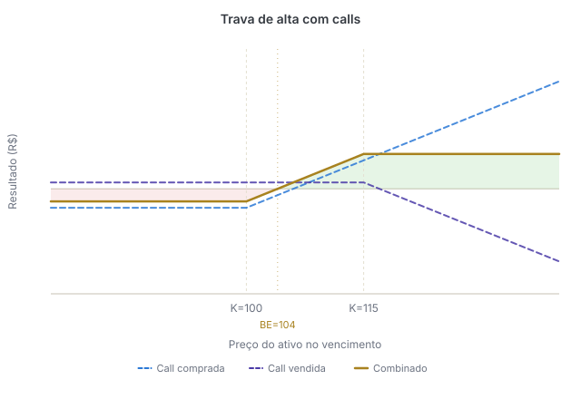
Trava de baixa com puts¶
Montagem: compra de uma put + venda de outra put com strike inferior (mesmo ativo-objeto, quantidade e vencimento).
É utilizada quando se espera uma queda moderada do ativo. A put vendida reduz o custo inicial, mas limita o ganho caso o ativo caia muito.
- Expectativa: queda moderada
- Ganho máximo: diferença entre os strikes menos o prêmio líquido pago
- Perda máxima: prêmio líquido pago
- Break-even: strike da put comprada menos o prêmio líquido pago
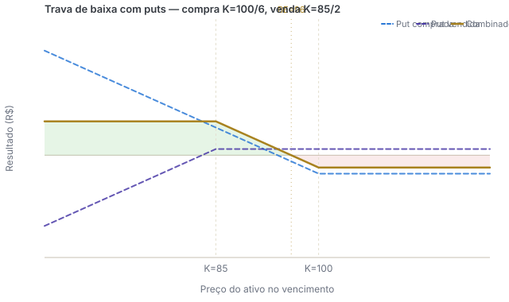
Straddle comprado¶
Montagem: compra de uma call + compra de uma put com o mesmo strike e vencimento.
A estratégia é utilizada quando se espera um movimento forte do ativo, mas não se sabe em qual direção. O investidor pode ganhar tanto com uma alta quanto com uma queda expressiva. Porém, como compra duas opções, precisa que o movimento seja suficiente para compensar os dois prêmios pagos.
- Expectativa: aumento relevante da volatilidade ou movimento forte do ativo
- Ganho potencial: elevado em altas ou quedas fortes
- Perda máxima: soma dos prêmios pagos
- Maior perda: ocorre quando o ativo termina próximo ao strike
A estratégia possui dois pontos de break-even:
- Break-even superior: strike + total dos prêmios
- Break-even inferior: strike − total dos prêmios
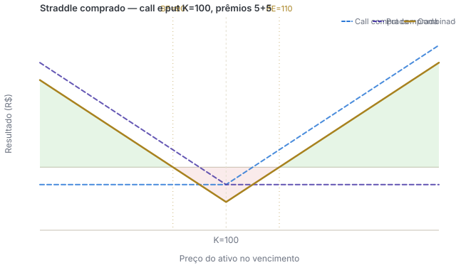
Strangle comprado¶
Montagem: compra de uma put com strike inferior + compra de uma call com strike superior (mesmo ativo-objeto e vencimento).
Assim como o straddle, o strangle é utilizado quando se espera um movimento forte sem uma direção definida. Seu custo normalmente é menor, mas o ativo precisa apresentar uma oscilação maior para gerar lucro.
- Expectativa: movimento forte ou aumento da volatilidade
- Ganho potencial: elevado em altas ou quedas fortes
- Perda máxima: soma dos prêmios pagos
- Maior perda: ocorre quando o ativo termina entre os dois strikes
Pontos de break-even:
- Break-even superior: strike da call + total dos prêmios
- Break-even inferior: strike da put − total dos prêmios
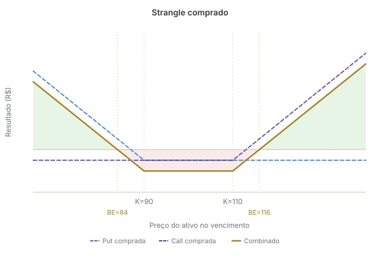
16. Paridade entre call e put¶
Calls, puts, o ativo à vista e contratos a termo possuem uma relação de equivalência entre seus preços. Essa relação é conhecida como paridade put-call.
A lógica é que duas combinações que geram o mesmo resultado no vencimento devem possuir valores econômicos compatíveis.
Caso uma combinação fosse negociada por um preço muito diferente da outra, poderia surgir uma oportunidade de arbitragem.
É essa relação que permite reproduzir um contrato a termo por meio de uma call e de uma put com o mesmo ativo, strike e vencimento.
17. Termo sintético¶
O que é?¶
Um termo sintético é uma combinação de duas opções que reproduz o resultado financeiro de um contrato a termo.
Ele pode ser utilizado, por exemplo, quando uma posição a termo está próxima do vencimento e o investidor deseja manter a exposição ao ativo por mais tempo.
Para que a equivalência funcione, a call e a put devem possuir o mesmo ativo-objeto, o mesmo strike, o mesmo vencimento e a mesma quantidade.
Termo sintético comprado¶
Para reproduzir um termo comprado: compra de call + venda de put
- A call comprada dá o direito de comprar o ativo pelo strike
- A put vendida gera a obrigação de comprar o ativo pelo strike caso seja exercida
No vencimento:
- se o ativo estiver acima do strike, a call estará ITM
- se estiver abaixo do strike, a put vendida estará ITM
- se estiver exatamente no strike, normalmente nenhuma das opções será exercida
Desconsiderando os prêmios e os custos da operação, o resultado no vencimento é: preço do ativo − strike
Por isso, a posição ganha quando o ativo sobe e perde quando ele cai, assim como um termo comprado.
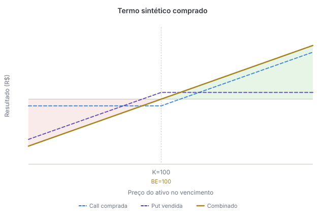
Termo sintético vendido¶
Para reproduzir um termo vendido: venda de call + compra de put
- A call vendida gera a obrigação de vender o ativo pelo strike
- A put comprada dá o direito de vender o ativo pelo strike
No vencimento:
- se o ativo estiver acima do strike, a call vendida estará ITM
- se estiver abaixo do strike, a put comprada estará ITM
- se estiver exatamente no strike, normalmente nenhuma das opções será exercida
Desconsiderando prêmios e custos, o resultado é: strike − preço do ativo
Assim, a posição ganha quando o ativo cai e perde quando ele sobe, como em um termo vendido.
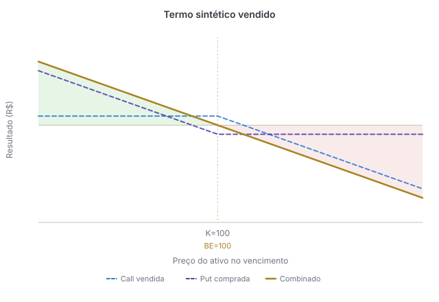
Uso em uma rolagem¶
Quando um termo está próximo do vencimento, o investidor pode:
- Encerrar ou liquidar a posição existente
- Montar um termo sintético com vencimento mais longo
- Manter sua exposição ao preço do ativo
Não basta, porém, escolher duas opções quaisquer. O preço econômico da posição depende do strike, dos prêmios, dos juros, dos dividendos esperados, dos custos e da margem exigida.
Caso o investidor não queira receber ou entregar o ativo no vencimento, pode encerrar as duas opções antes do exercício e montar um novo sintético com vencimento posterior.
Se as opções forem mantidas abertas e terminarem dentro do dinheiro, o exercício poderá gerar a compra ou a venda efetiva do ativo.
Padrão sugerido para os gráficos de payoff: eixo horizontal com o preço do ativo no vencimento, eixo vertical com o lucro/prejuízo, linha em zero, strikes e break-evens marcados, prêmios incluídos no cálculo, legenda separando cada perna e o resultado combinado.